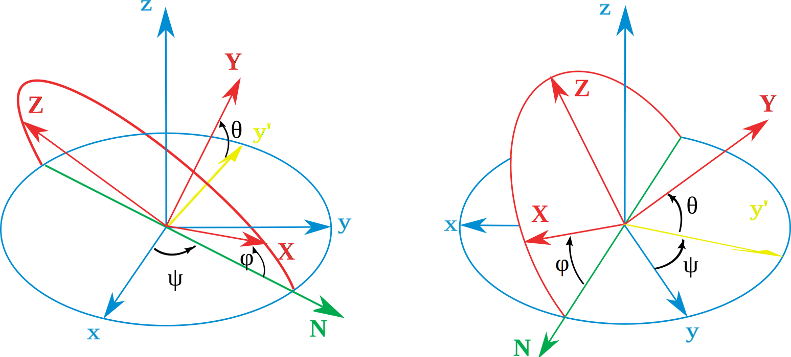

Mašinsko učenje &
motion capture sistemi
motion capture
Optički sistemi:
aktivni
pasivni
markerless
Magnetni sistemi?
Inercijalni sistemi ❤
Ljudske poze?
Inercijalni sistemi za praćenje pokreta
+
+
=
IMU
Inertial measurement unit
+
Sensor fusion ❤
=
AHRS
Attitude and heading reference system
and maybe INS
Inertial Navigation System
Kalman filtri
Orijentacija

Ojlerovi uglovi?
NOPE
A rotacione matrice?
Kvaternioni
q=(x, i, j, k)
i2=j2=k2=ijk=-1
positive definite kvaternioni?
Xsens MVN
motion capture odelo
MVN Link i MVN Awinda
problemi?
Rekonstrukcija pokreta
kNN pristup

bliske poze?
pretraga prostora:
kD stabla
Delaunay trijangulacija
Gabriel graph
Relative neighborhood graph
Beta skeleton
kD tree ⚡ graf baza
Rezultati rekonstrukcije
metrika
glitching
neeuklidski prostor
Neuronske mreže
Ulazi
Izlazi
Treniranje
želimo:
dobru rekonstrukciju
bez glitcheva
generalizaciju